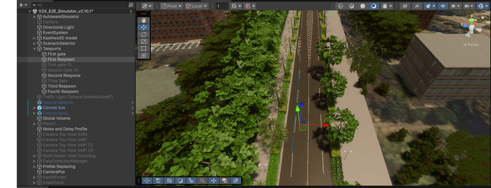
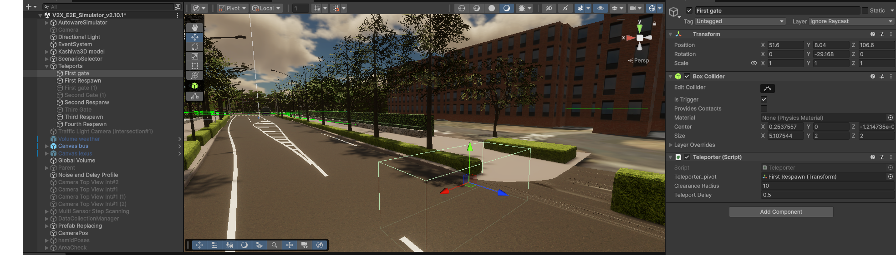

Teleporter Component
Overview
The Teleporter component is a trigger-based system that automatically relocates the ego (autonomous) vehicle to a new spawn position whenever it exits through a designated trigger volume. It handles NPC clearance at the destination, optional delays, and logs the spawn selection data for analysis.
Key Design Goal
The Teleporter is designed for repeatable, controlled experiments: by targeting a midpoint lane segment with a randomized arrival time, each run places the ego vehicle at a different distance from a point of interest while keeping the scenario statistically comparable.
Spawn Strategies
The Teleporter supports two independent strategies, selectable from the Inspector.
Samples candidate spawn positions along a set of configured TrafficLane objects, then picks the candidate whose estimated travel time to a target midpoint lane is closest to a randomly drawn target time.
This strategy guarantees that the ego vehicle is placed at a realistic driving distance from the point of interest — far enough to observe natural traffic behaviour before reaching it.
Picks a random Transform from a hand-placed list of RandomSpawnPoint entries. Each entry can optionally override the rotation with a custom Euler angle.
Use this strategy when you need full manual control over spawn positions without any ETA logic.
LaneMidpoint Strategy in Detail
Candidate Generation
The Teleporter walks through all LaneSpawnSource entries and samples each lane at regular intervals defined by spawnSubdivisionSpacing (default 10 m):
Lane waypoints → cumulative distance table → sample every N metres
If includeSegmentEndpoints is enabled, the start and end of each lane are also included as candidates.
For each sample, the component caches:
- World position (interpolated along the lane waypoints)
- Forward direction (used to orient the vehicle on spawn)
Distance Calculation (Dijkstra)
For each candidate, the Teleporter computes the driving distance to the configured midpointSegment lane. When the candidate is on a different lane than the midpoint, it runs a lightweight Dijkstra search through the lane graph (NextLanes connections):
cost(start_lane) = lane_length - distance_from_start
cost(next_lane) = cost(current_lane) + next_lane_length
...
stop when midpointSegment is reached
Candidates with no reachable path to the midpoint are excluded.
ETA Calculation
Travel time is estimated with a two-phase kinematic model (acceleration + cruise):
Where:
- \(d\) = distance to midpoint (metres)
- \(v_c\) = cruise speed (
cruiseSpeedKmhconverted to m/s) - \(a\) = assumed acceleration (
assumedAcceleration)
Target Time Selection
Each teleport draws a random target arrival time uniformly from targetArrivalWindow:
t_target ~ Uniform(targetArrivalWindow.x, targetArrivalWindow.y)
The candidate with the smallest |ETA - t_target| is selected.
NPC Clearance
Before moving the ego vehicle, the Teleporter calls RemoveVehiclesInRadius() on every active TrafficManager in the scene, clearing all NPC vehicles within clearanceRadius of the destination. After clearing, it waits for teleportDelay seconds (plus an optional random spawnDelayRange) to let the physics settle before the actual teleport.
sequenceDiagram
participant T as Trigger Volume
participant TP as Teleporter
participant TM as TrafficManager
participant EGO as Ego Vehicle
T->>TP: OnTriggerEnter (ego vehicle)
TP->>TP: SelectSpawnCandidate()
TP->>TM: RemoveVehiclesInRadius(dest, radius)
TM-->>TP: vehicles cleared
TP->>TP: Wait teleportDelay (+ random delay)
TP->>EGO: Disable Rigidbody (kinematic=true)
TP->>EGO: SetPositionAndRotation(dest)
TP->>EGO: Reset velocities, re-enable physics
TP->>TP: LogSpawnSelection()
Inspector Reference
Teleport Timing
| Field | Default | Description |
|---|---|---|
clearanceRadius |
10 m | Radius around destination to clear NPC vehicles |
teleportDelay |
0.5 s | Fixed wait after NPC clearance, before teleport |
spawnDelayRange |
(0, 0) |
Extra random delay: X = min, Y = max. Set Y > 0 to enable. |
Strategy Selection
| Field | Default | Description |
|---|---|---|
spawnStrategy |
LaneMidpoint |
LaneMidpoint or RandomPoint |
Lane-Based (Midpoint Targeting)
| Field | Default | Description |
|---|---|---|
laneSpawnSources |
— | Lanes to sample candidates from |
spawnSubdivisionSpacing |
10 m | Distance between sampled points along each lane |
includeSegmentEndpoints |
true | Include lane start and end as candidates |
midpointSegment |
— | The target lane for ETA calculation |
midpointSegmentFraction |
0.5 | Normalised position on midpoint lane (0 = start, 1 = end) |
cruiseSpeedKmh |
30 km/h | Cruise speed for ETA estimation |
assumedAcceleration |
2 m/s² | Acceleration for ETA estimation |
targetArrivalWindow |
(0, 90) s |
Random range for target arrival time |
Random Spawn Points
| Field | Description |
|---|---|
randomSpawnPoints |
List of Transform entries used by the RandomPoint strategy |
useCustomRotation |
Per-entry toggle to override rotation with customEulerRotation |
Spawn Selection Logging
After every teleport, the Teleporter calls LogSpawnSelection() on the ego vehicle's LogAutonomous component (if present). This writes one row to the spawn selection CSV:
| Column | Description |
|---|---|
timestamp |
Simulation time of teleport |
midpoint_segment |
Name of the target midpoint lane |
spawn_lane |
Name of the selected spawn lane (or "RandomPoint") |
sample_index |
Index of the sample point on the spawn lane |
distance_to_midpoint |
Dijkstra path distance to midpoint (m) |
estimated_time |
Kinematic ETA to midpoint (s) |
target_time |
Randomly drawn target arrival time (s) |
reached_cruise |
Whether cruise speed was reached before the midpoint |
spawn_x/y/z |
World position of the teleport destination |
See Loggers for details on the full CSV output.
Scene Setup
Step 1 — Create the Trigger Volume
- Create an empty GameObject.
- Add a BoxCollider and enable Is Trigger.
- Scale it to cover the exit area of your road loop.
- Attach the Teleporter script.
Step 2 — Configure Lanes (LaneMidpoint strategy)
- In the Inspector, add entries to Lane Spawn Sources and assign
TrafficLaneobjects that cover the valid spawn zone. - Assign the Midpoint Segment — the lane the ego vehicle should be heading toward on each run.
- Adjust
cruiseSpeedKmhandassumedAccelerationto match the ego vehicle's expected behaviour.
Step 3 — Tune the Arrival Window
Set targetArrivalWindow to the range of arrival times you want to study. For example:
(10, 60)s → vehicle always arrives between 10 and 60 seconds after spawn(0, 0)→ vehicle always spawns as close to the midpoint as possible

Figure 1: Final vehicle position after teleport

Figure 2: Trigger gate and BoxCollider in the scene
Tips and Best Practices
Lane Coverage
Add lanes that span the full approach zone to the midpoint. More candidates give the system more flexibility to match the target arrival time precisely.
Clearance Radius
Set clearanceRadius large enough to prevent the ego vehicle from spawning inside an NPC. A value of 10–15 m is usually sufficient.
Midpoint Must Be Reachable
If no candidate has a connected path to the midpointSegment, the teleport is aborted. Verify lane connections with the TrafficManager gizmo (enable showSpawnPoints in the Inspector).
Re-trigger Prevention
The Teleporter internally tracks which vehicles are currently being teleported (teleportingVehicles HashSet), so a vehicle re-entering the trigger during the delay phase is ignored.